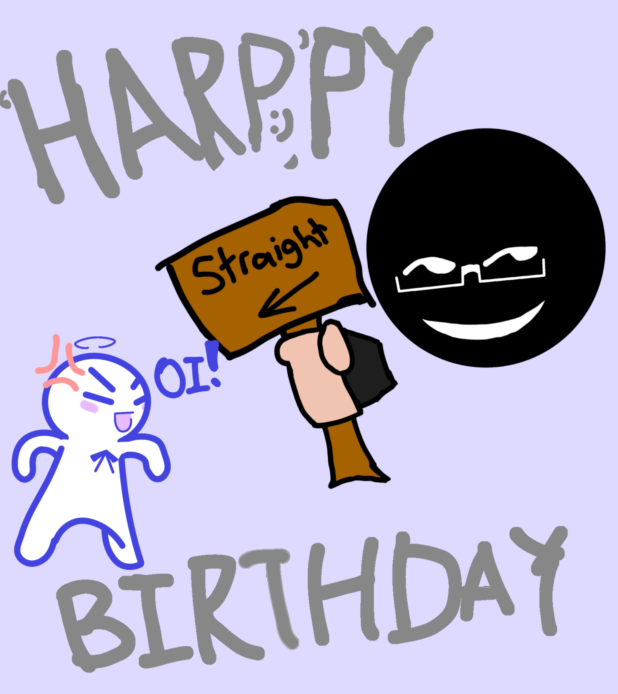
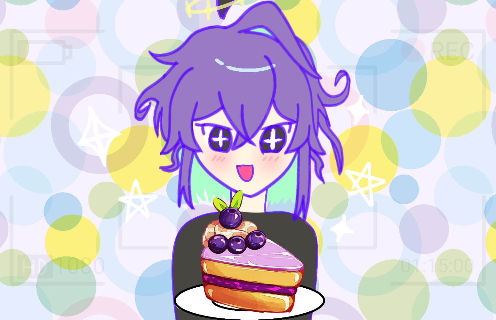
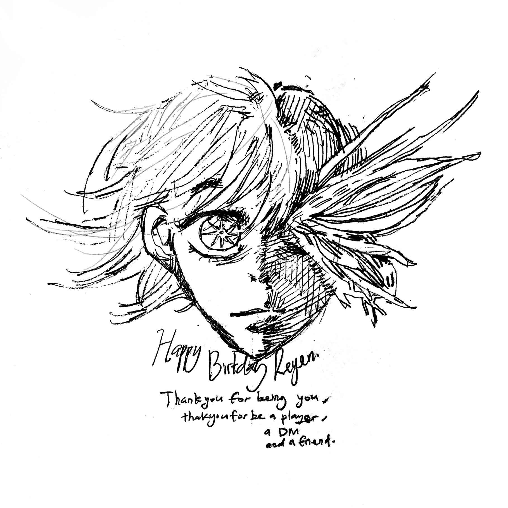
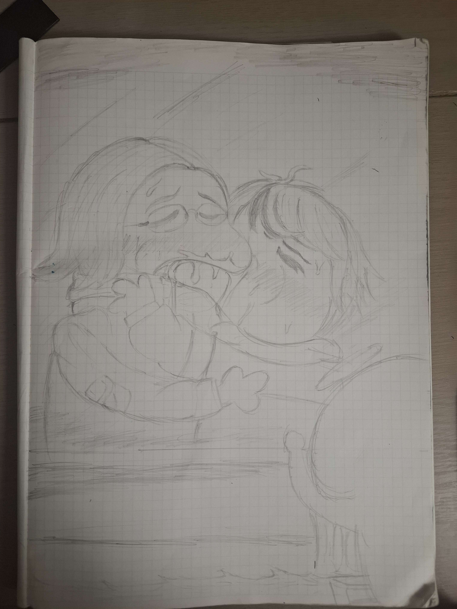
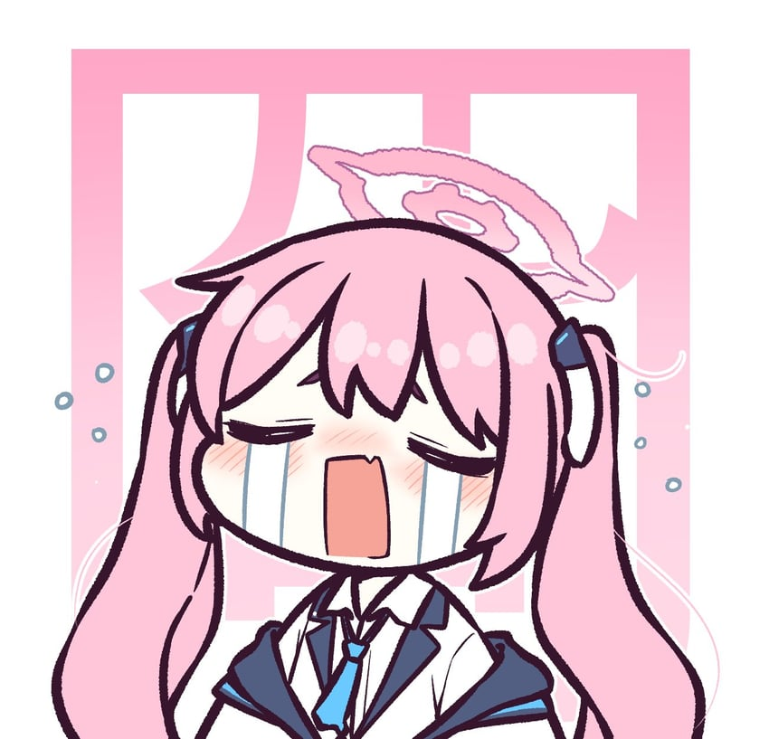

Zack's Message
Happy Birthday Kakak Reyen the most heterosexual person i know ☺︎

Mei's Message
Happy triple T (TwenTy Two) birthday ☺︎☺︎☺︎☺︎

NZT's Message

Dumbass' Message
Happy birthday reyen the gay here is the only gay shit I shall ever draw

Jerrylinsy's Message
"Heya, 22nd Happy birthday reyen. I remember the first
time i met you was through rizzlers, especially took noticed
of your character's art. Your art has always been amazing
but especially i remember the first time i saw you draw in vc,
it was mesmerizing seeing the process in front of my eyes.
Even outside of art tho, ive noticed just how approachable you are,
maybe its the tone or whatever but it always feel comfortable talking to you.
Oh i also wanna take this chance to thank you for being a good friend to alex.
I've know alex for a long time and i've also known her struggle, however i dont really
had the capability to help her. But ever since she started talking to you
she seems way happier and as a friend i can only be grateful.
Once again Happy birthday and i wish good luck in whatever you do (Especially IRL)"
Ivan's Message
"So we've known each other for idk, 4-5 years correct me if I'm wrong, not that you
can correct me as of the time you're reading this lmao? But I've actually heard you're
name way before. If I have to put it into words, it's like some character name dropped
someone who's going to be significant in story arc 7 during arc 4, which I found quite funny.
Regardless, it's your 22nd birthday, so here's to you getting older and wiser. I'm glad to (still)
have you as a friend, both for myself, and with the others. You're such a brimming person who lifts
everyone up just by being around; to some, it may be just a good company, but to others, may prove to be
more significant than you'd think.
But of course, no matter how bright a star is, there will be moments when it dims. So I want you to be reminded
of this fact: no matter if you like it or not, you're not alone, so rely on us would you?
You're one of the strongest person I know, and one of the only people who kept their battles to themselves. It's impressive really,
the things you've done and put up against. That's part of the reason why I respect you very much, but do take some break in between,
don't be too hard on yourself.
Life's tough, but I can see you're tougher. So let's cheers to your future, cheers to your endeavours, cheers to this friendship.
Happy birthday Reyen, let this time of your life simmer in, and enjoy it."
Evan's Message
Happy Birthday Straight Women! Now ,I don't have a lot to say than that Hope you have a good day in your future even at the toughest time
and if you need any help in life, DON'T hesitate to ask us and your Best friend Alex for help or maybe even a tips on how to deal with the situation the best we can.
Melty's Message
In life we struggle ,
In death we rest ,
yet without strive
hope may not thrive,
So enjoy the present for it is gift ,
Let not the past carry you adrift.
PS : Happy Birthday Reyen this came up to me when I was cooking dinner. Yet another year has passed and not once did I regret anything I said or did with you.
Best wishes and keep that passion for art alive. I would get you Eitaku stuff as a gift however I am a broke ass bitch , perhaps next time when I have income.
Whiskey's Message
Heyya Grany, happy birthday, hope you a good year ahead full of eitaku, and healthy bones (No back pains)!
Russeo's Message
Chapter 1: Across the vast and unforgiving landscape of the modern world,
countless species have evolved strange and remarkable methods of survival.
Some migrate with the seasons. Some hunt beneath the cover of darkness.
Some build elaborate nests.
And some... stay awake until six in the morning looking for two fictional
men who might possibly like each other.

Click the image to read the full message.
Special Thanks
And finally, I want to give a special thank you
to Ivanno Polka (Ivan) for giving me the idea
to write about a metaphorical story of how we both met.
Although the story didn't actually went along as planned.
I've still managed to adapt it into my own kind of format
unique to what I can do as an individual.